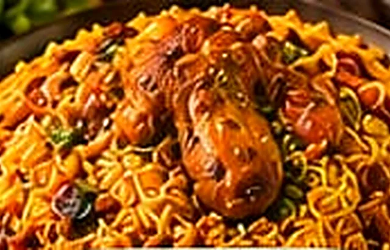
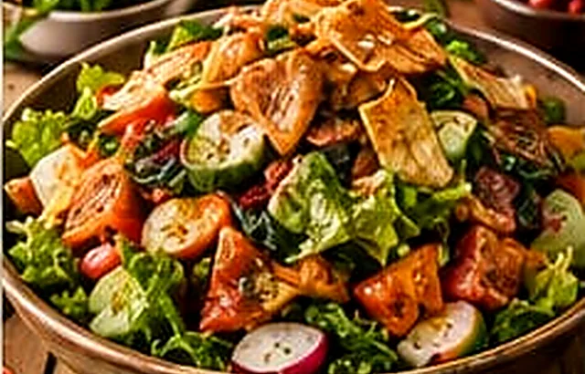
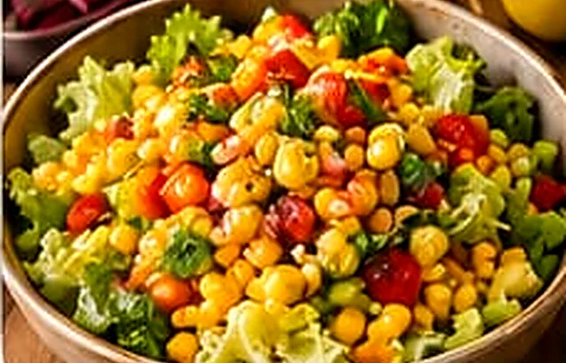

15 يوم
50 دينار
- توصيل يومي
- وجبة رئيسية
- سلطة ومقبلات
أكلات من القلب، بمكونات مختارة ونكهات أصيلة. من أطباقنا الرئيسية إلى سلطاتنا الطازجة، كل وجبة إلها حكاية.


وجبات بيتية متوازنة مع خطط اشتراك تناسب يومك. خلي تجهيز أكلك علينا واستمتع بوقتك.
15 يوم
30 يوم

في زاد وملح، بنؤمن إن الوجبة الحلوة مش بس طعم... هي اهتمام بالتفاصيل، ومكونات طازجة، ولمسة بيتية بتخلي كل لقمة مميزة.
من أطباقنا الشعبية إلى السلطات والخيارات الصحية، بنحضّر كل طبق بمحبة وعلى أصوله.
تصفّح القائمة وأضف الأطباق اللي بتحبها لطلباتك.